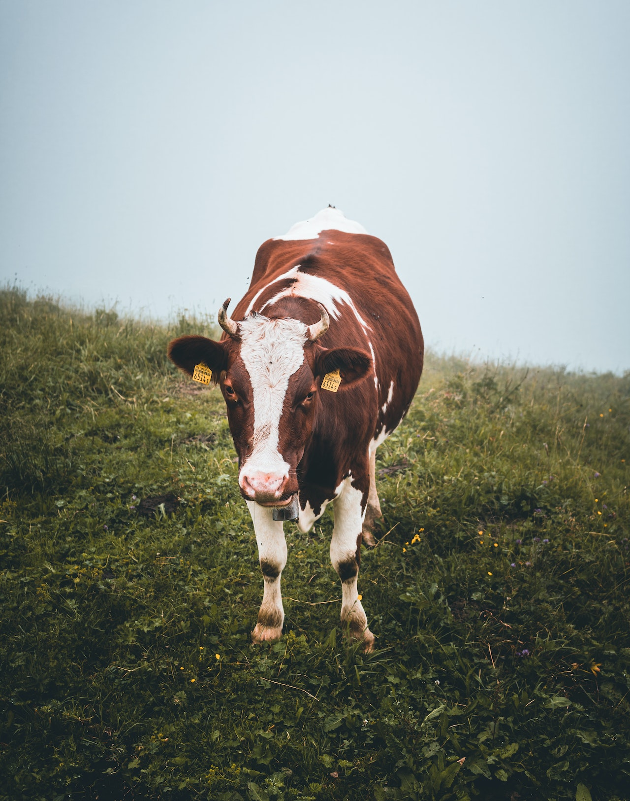
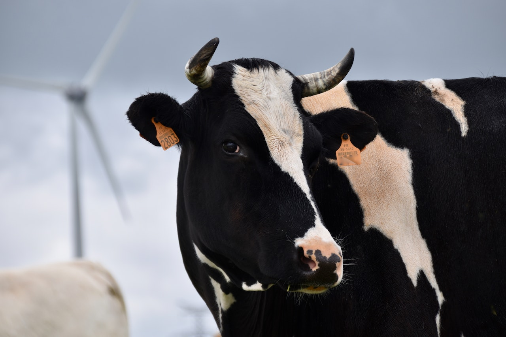

Vaca
da família bovidaeA vaca é um animal herbívoro que faz parte da família Bovidae. São criaturas domesticadas e amplamente criadas em todo o mundo, principalmente por sua produção de leite e carne. Existem várias raças de vacas, cada uma com características distintas em termos de tamanho, cor e produção de leite.
As vacas são animais encontrados em fazendas e ambientes rurais. Elas são conhecidas por sua capacidade de pastar e ruminação. As vacas possuem um sistema digestivo especializado que lhes permite extrair nutrientes de alimentos fibrosos, como grama e feno.
O tamanho e o peso das vacas variam dependendo da raça. Em média, as vacas adultas podem atingir alturas que variam de 1,4 a 1,8 metros e pesar cerca de 700 a 900 quilogramas. No entanto, algumas raças maiores podem exceder essas medidas.
As vacas têm uma expectativa de vida que varia de 15 a 20 anos, mas algumas podem viver por mais tempo com os devidos cuidados.
"As vacas são animais dóceis, inteligentes e desempenham um papel importante na produção de alimentos para os seres humanos."
- Tipo: Mamífero
- Peso médio: 700 kg
- Idade Média: 20 anos
- Família: Bovidae
As vacas desempenham um papel crucial na indústria agrícola, fornecendo leite, carne e couro. Elas também são valorizadas por sua contribuição para a fertilização do solo através do estrume. Além disso, as vacas são animais sociais e formam laços afetivos com outros membros do rebanho.
Esses animais possuem um senso de hierarquia dentro do grupo, e as vacas leiteiras são frequentemente ordenhadas para coletar o leite que é amplamente consumido em várias formas em todo o mundo.